Developing an online self-service for changing contact information for revenue growth
My Tasks: UXUI Design, User Research, Usability Testing
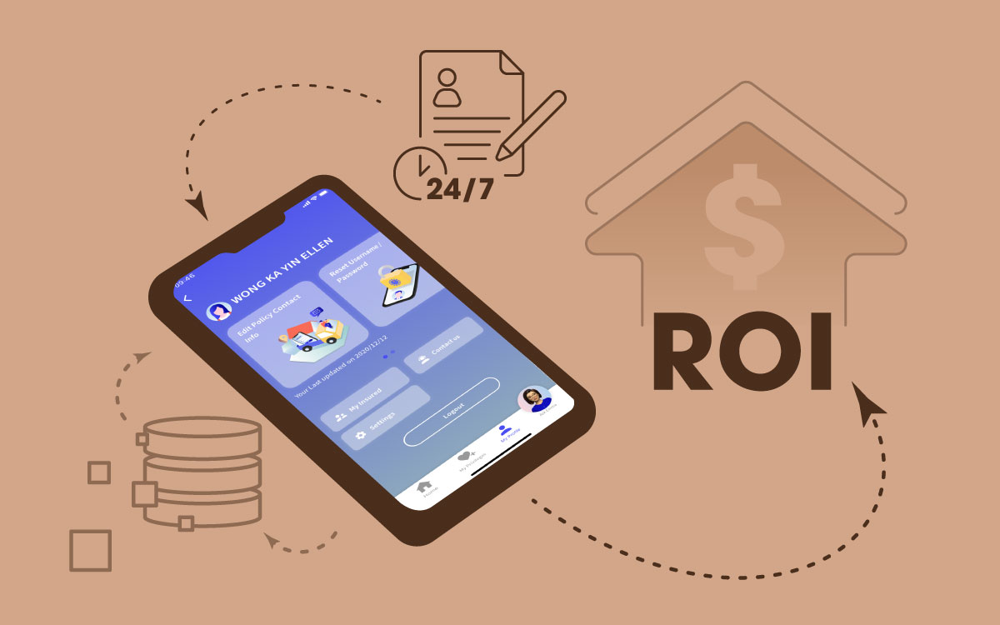
Background
31% of AXA hotline inquiries related to contact information changes in 2019. If users can't change their contact info with customer service, they must fill out a paper form — wasting double the cost. So why not let them update contact details online by themselves?
My Role
Product Design Lead — user journey design, defining component use cases, defining a development road map, defining user research requirements, UI designer, component designer, UI journey design.
Big Challenge — Inconsistent Data Storage
As a result of a basic study on our current database limitations, several issues surfaced.
My Goal
- An effective solution with stable performance — devise a user-friendly solution that not only met users' needs but also prevented data overloading and potential performance issues.
- Scalable and maintainable — create a scalable, straightforward solution to maintain, further mitigating the risk of data-related performance challenges.
- Eliminate extra resource — reduce the internal human workforce and paper usage.
- Efficient data analysis for ROI calculation and strategic planning — provide concise tagging guidelines for data analysts, capable of calculating ROI to facilitate strategic planning.
Action Taken
- Collaborated with Business Analysts to create research questions for various teams:
- Operations Team — existing validation rules/regulations, which client countries to support (Hong Kong, Macau, China, Taiwan).
- Data Team — existing database structures, data storage formats, data identifiers, client segmentation.
- Data Analytics Team — clients’ demographics, data collection criteria, API exploration.
- IT Development — existing resources, potential impact from other projects.
- Analyzed the tasks generating the most cost, in both the operations process and the data analytical process.
- Ideation with BAs and the development team — front-end journey and validation process, component design.
- Set the direction of product design: the contact information change journey should be scalable; defined automation tasks (e.g. daily report generation) and critical human processes (e.g. exceptional case approval, error log review, data extraction); minimized redundant work when onboarding new business lines.
- Led and approved the usability testing requirement — testing with real, in-person users to validate usability, defining the testing topic/scope, passing background research to the research team, and leading the recruitment requirement.
- Defined development scope — split journey development into several phases based on resources and the launch schedule.
Highlight Solution
Overview page
To help users easily identify policies with outdated contact information, we provide a policy overview for reviewing contact details. We implemented caching of policy numbers on the homepage, making it quicker to load policy details when users access the page.
Filter out complicated cases
For users residing outside the covered regions, or those who need to change their contact information to another country, an additional form with extra information is required — so we redirect these users to the offline service.
Applying the change to multiple policies
Users can apply a contact information update across multiple policies at once, reducing repeat work for both users and the operations team.
Simple, fast address form filling
Users can save time and prevent mistakes by choosing their location or searching for their building name — they only need to type in flat and floor details, and the system turns it into a four-line address. The data team could also use the same mapping equation for analysis.
Keep a simple solution for China, Macau and Taiwan address changes
Due to different address formats in China, Macau, and Taiwan compared to Hong Kong — and since the majority of clients are from Hong Kong — we chose not to extend the map search solution to other countries. Currently, no map search engine supports all four regions, so we kept a simple four-line form for those addresses to minimize development costs.
Project Limitation
Because the data on the overview page is caching records, we need additional steps to load policy details and confirm which policy information would be updated. I hope this data loading issue can be solved soon so future UX designers can streamline the journey of updating information.
Result
The online contact information change process accounted for approximately 60% of all contact information changes within the first three months. This significant improvement demonstrates the impact of the solution on user behavior and revenue generation.
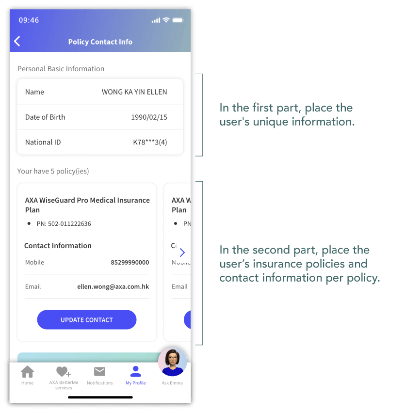
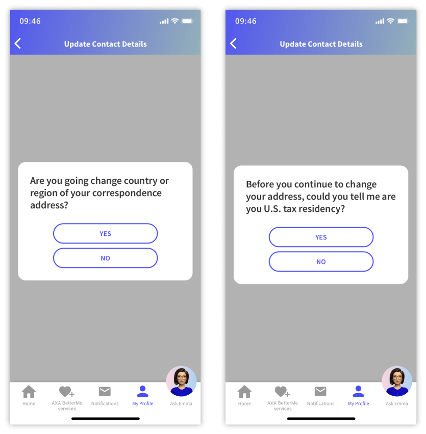
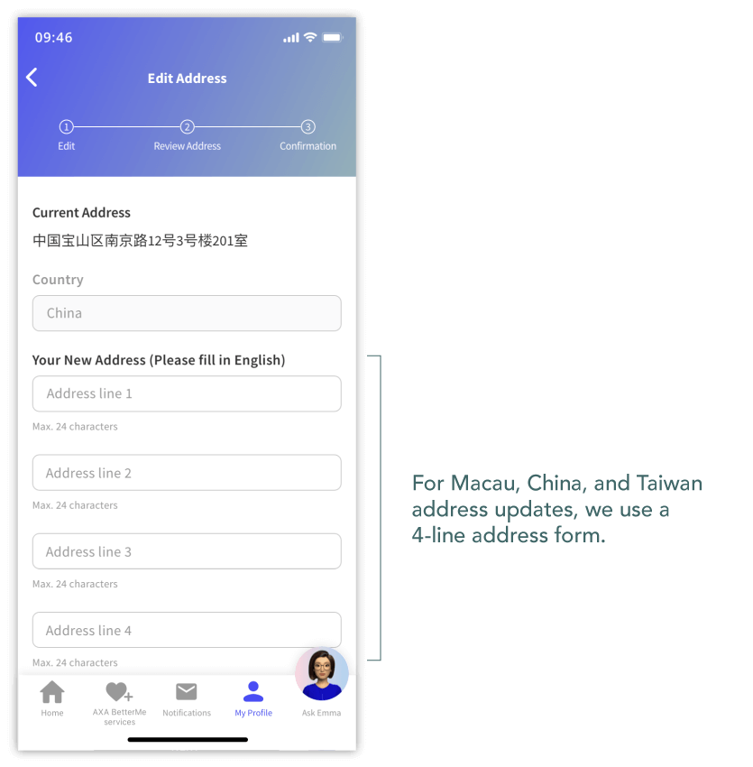
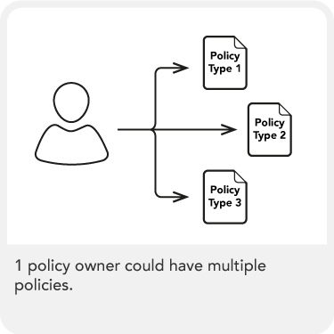
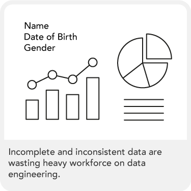
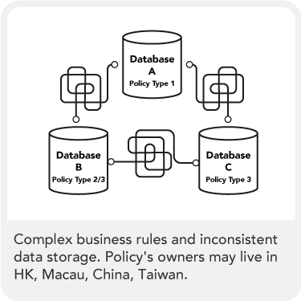
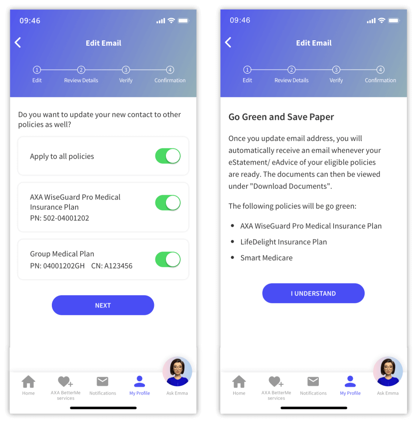
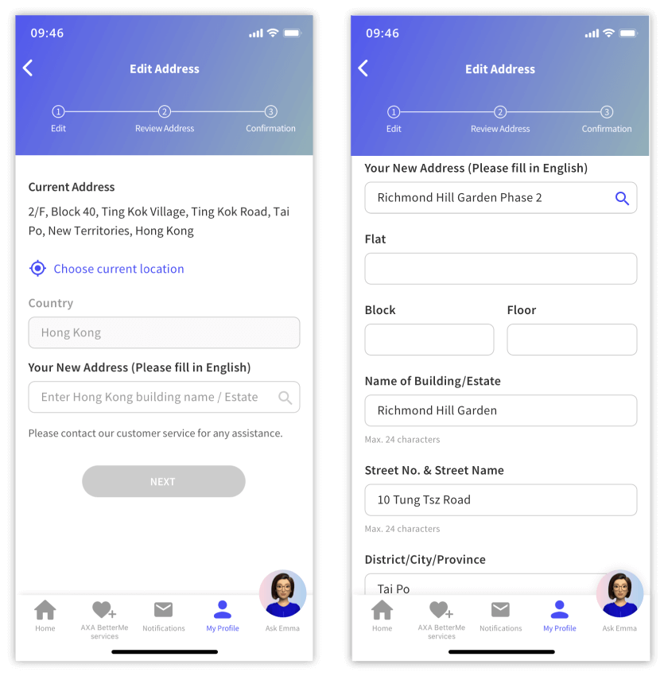
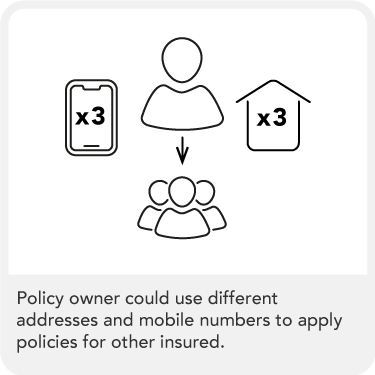
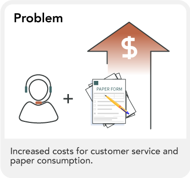